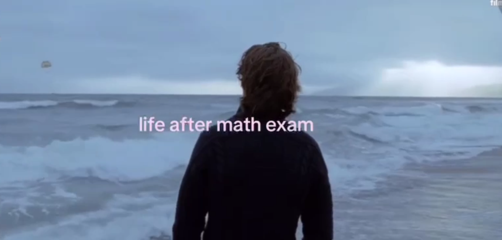

Топология изучает свойства пространств, сохраняющиеся при гомеоморфизмах.
На этом сайте собраны несколько определений, примеры поверхностей и учебные материалы.

Настроение после экзамена по математике.
Табаков Артём Владимирович, БМТ 255. Учебный проект.